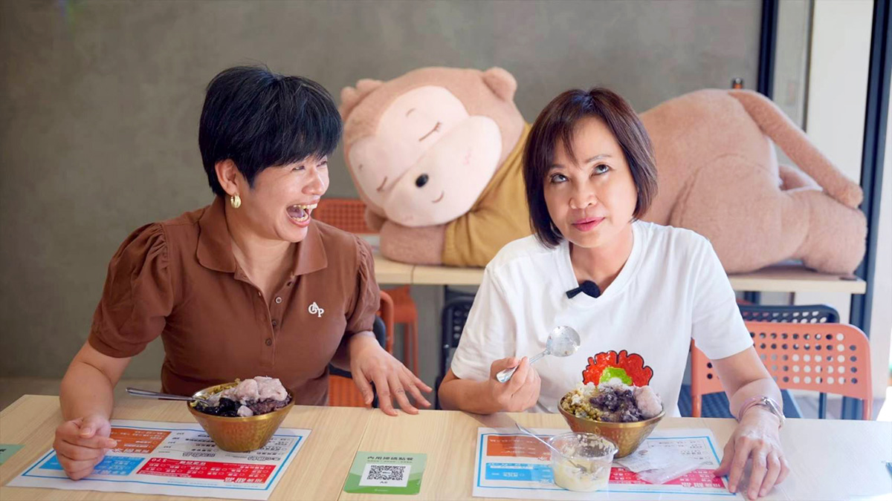
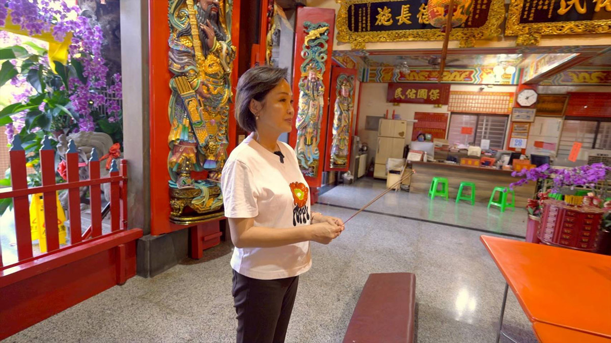
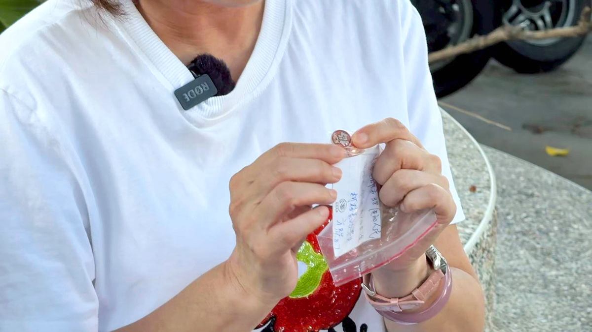

她的城市考題
柯志恩
直率的真實，能轉換成市民的治理信任嗎？
◎ 報導／呂佳頴
◎ 攝影／柯勝雄
她的城市考題
◎ 報導／呂佳頴
◎ 攝影／柯勝雄
2026年6月
高雄鼓山、龍泉宮
你翻白眼的時候，是偷偷翻，還是光明正大地翻？先別急著回答。我要告訴你一個在鏡頭前，敢大方翻白眼的政治人物——柯志恩。那天，我們在高雄鼓山一起吃冰，她翻了至少四次白眼，沒有不歡而散。
相反地，那些白眼，也許比很多答案，更接近柯志恩本人。因為她不是不知道鏡頭在拍，她只是沒打算把每一個反應，都修成政治人物該有的樣子。
發言人黃騰憲說，柯志恩心情不好的時候，他們會趕快帶她去吃冰、或吃甜食。那現在是心情不美麗嗎？她立刻補充，不管心情好還是不好，她都要吃冰。「天氣這麼熱，不吃冰怎麼可以？」她說自己是正港的南部小孩。
她面前那碗冰，料堆到快滿出來。粉圓、芋圓，只要 QQ 的東西，她都愛。問她為什麼，她說從小就愛，可能是有嚼勁吧！停了一下，她又自己補上一句：「啊，現在要說，因為有韌性。」講完，她自己大笑。這個反應很快很直接，也帶著一點不想修飾的任性。而「韌性」這兩個字，放在柯志恩身上，剛好有意思，因為高雄對國民黨來說，從來不是容易的地方。

▲ 柯志恩愛吃冰和甜食，只要心情不好就會去吃冰，敢在鏡頭前翻白眼的政治人物不多，柯志恩（右）是其中一個。（圖／柯勝雄攝）
上一次選輸之後，她沒有離開；這一次，她又回來了。我直接丟一句：「老娘來了？」她接得很快：「老娘當初敢來，就敢留下來，也敢把它打贏。」接著，她又說：「一輩子就留在這裡。」說完，她舀了一口冰。彷彿剛剛沒說什麼了不得的話。
而我們吃冰的地方，離她住家不遠，那是她上一次選完之後，買下來的房子。
對政治人物來說，留下來有時候是一句口號，但買房子，是把口號變成地址。
我轉頭問幕僚：「你老闆算是個女漢子吧？」柯志恩馬上搶答：「他們聽不懂女漢子啦，有世代差異。」這時，採訪的人和被採訪的人，互相白了對方一眼。突然明白，這天的吃冰，不只是吃冰，是一個政治人物，試著不把自己演得太完美的一刻。
黃騰憲說：「真實一點比較好。」他才說完，柯志恩就白了他一眼。原來，幕僚前幾天貼了一支她跳舞的影片，柯志恩很不滿。「他貼我跳舞不協調、跟不上節拍的影片。」黃騰憲趕快解釋：「沒有不協調，是自然，很可愛。」
但真正讓老闆停止抱怨的，不是「可愛」，是影片有廿多萬次點閱。點閱數，有時候比幕僚的求生欲更有說服力。不過，柯志恩沒有完全放過他們。她說，影片隨他們搞就算了，現在連照片也想染指。黃騰憲則說，他們有時會挑出比較自然、甚至不那麼完美的照片。
▲ 柯志恩性格豪爽，卻很在意社群上的漂亮形象。
幕僚覺得老闆留美博士、做過電視主持人的菁英形象，在北部也許吃香；但到了南部，大家不一定買單。「老闆的真和無畏，該被看見。」他說。但柯志恩立刻補上一句：「要有美感啦！」
這就是柯志恩有趣的地方，她不是不能接受白眼，也不是不能接受不完美。她在意的是，真實不是亂放，自然也不是隨便。可以有白眼，但不能張張都是白眼。可以不完美，但不能把不完美包裝成另一種偷懶。
吃完冰，柯志恩轉進附近的龍泉宮。沒有通知廟方，沒有安排接待，她自己點香、拜拜、祈福。不需要接待嗎？她說，拜廟是日常，何必麻煩別人。
「保佑全家平安，年底一切都可以順遂。」她口中的年底，就是高雄市長選舉。這一次再回來，說她空降的人少了，但高雄畢竟不是一座可以輕易拿下的城市。有人願意伸手；也有人看見她伸出的手，但是最多點個頭，就把頭別過去了。她說，不用放心上。一次不行，就再來第二次，總要讓大家知道：「我是來交朋友的。」

▲ 敢在鏡頭前翻白眼的柯志恩會在拜廟時不想麻煩別人。（圖／柯勝雄攝）
對柯志恩來說，高雄不是舒適圈。她要打破的，不只是外界對她的印象，也包括高雄人對國民黨、對她、對一個再回來挑戰的人，心裡那道不一定說出口的距離。說到這裡，她提起另一件事 : 有一次跑攤，遇到爸爸的學生，對方拿了一枚徽章給她。
那是她爸爸柯文福第一次選舉時做的小物——「福」字徽章。她父親做過屏東縣長，她從小看著爸爸在家裡處理農漁會事務，如今自己也走上這條路。「算是傳承吧。」她說。但她也知道，爸爸不見得希望她走政治，因為太辛苦。
她看著那枚徽章，念出對方寫給她的紙條。念完，她停了一下。「不能再繼續說爸爸，不然會哭。」那一刻的柯志恩，不專業、不犀利，也不需要反應很快，她只是個想爸爸的女兒。

▲ 性格豪爽、直率的她差點被一枚徽章逼哭。 這枚徽章是她爸爸──柯文福當年選屏東縣長的競選小物。她在掃市場時，民眾轉送給她的，一句柯縣長的福氣傳承給妳，讓她當場淚崩。（圖／柯勝雄攝）
這天的柯志恩有很多面。會翻白眼、會吃冰消火氣、會用心理學分析酸民、會拜廟時不想麻煩別人、會說「老娘敢來，就敢留下來」、也會在講到爸爸時，突然停住，怕自己哭出來。
喜歡她，或不喜歡她，都可以。至少那天，看到的不是一個被修成完美形象的政治人物。而是一個願意把白眼留在臉上，也把眼淚忍在眼眶裡的人。
她沒有把自己演得太完整。因此，反而更像真的，這是柯志恩的優勢。但如果這個人要再次走進高雄市長選舉，問題就不只是她真不真。而是這份真實，能不能讓高雄放心？城市最後要交出去的，是信任。
當真實碰到利益衝突、碰到艱難決策、碰到城市資源分配，碰到支持者期待和反對者不信任的拔河⋯⋯那個敢把白眼留在鏡頭前的人能不能也把一座城市扛起來？

一路把每一棒跑好的人，能不能跑出自己的路線？

習慣把答案整理清楚的人，能面對沒有標準答案的台北嗎？

看見缺口的人，能從台北的各種「可是」裡找到方向嗎？

會維修城市的人，能想像「城市」嗎？

跑遍新北的人，能不能把腳印走成方向？

擅長管理複雜系統的人，能讓快速長大的桃園產生共同方向嗎？

熟悉制度的法律人，能找回「消失的4分鐘」嗎？

看懂產業布局的人，能不能看見每一種人的生活？

地方跑得久的人，能不能跑出城市方向？

給答案可以很快，城市治理什麼都能馬上辦嗎？

從競爭中突圍的人，能不能讓不同地方、派系與世代重新走在一起？
新聞部
副總經理 王結玲
議題研究中心／呂佳頴
採訪中心攝影組／柯勝雄
網路新聞中心／楊致中・談雍雍・吳家瑜
數位事業部
內容策展組／廖玉貞・彭嘉儀・林佳瑤・李佳綺
© TVBS Media Inc. All Rights Reserved.｜聯利媒體股份有限公司